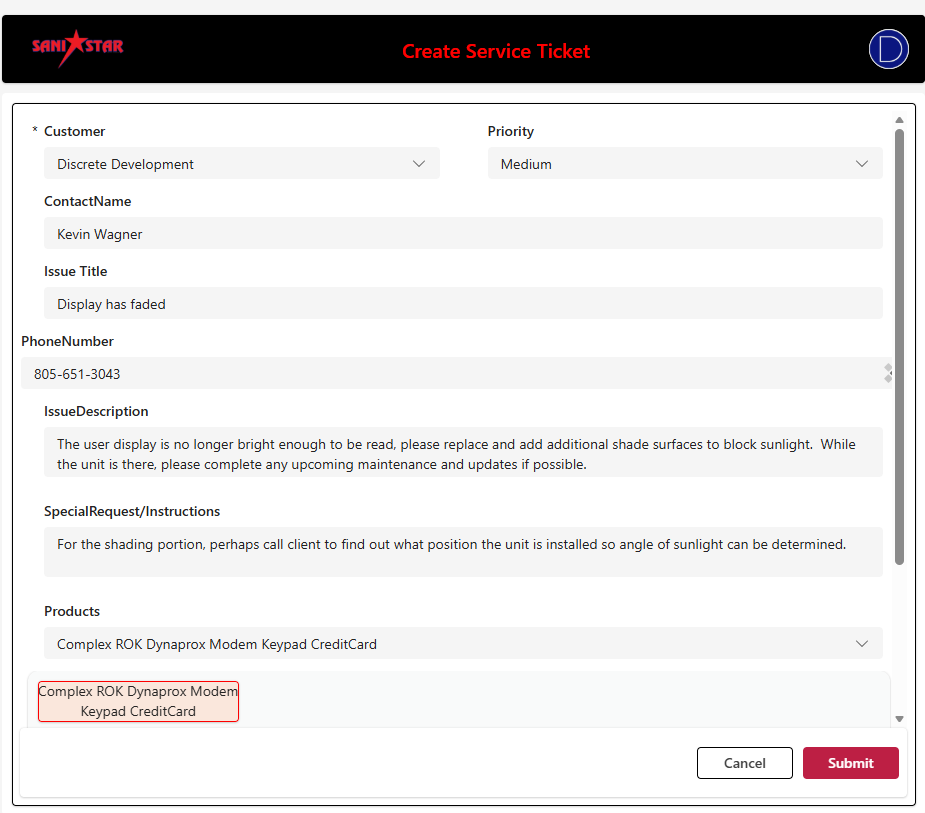

Service Module
Service tickets are designed to help move work through the business, capture anything that will help business functions, and deliver that information to those who need it to do their work. It is provided as a tool and meant as an aid in completing tasks efficiently. As a tool, it must be developed to the state that best fits your needs. If you have feedback on how to make it better, please share!
In this module you can create and manage:
- Sales Orders
- Build Orders
- Service Tickets
- Support Tickets
Work and Organize data:
- Dashboards to track and manage work
- Reports to analyze performance and trends
- Historical Data by Date, Technician, Status and Client

Service Ticket Lifecycle
The purpose of tickets are to help move work through the business. They are also designed to capture anything that will help business functions, and deliver that information to those who need it to do their work. It is provided as a tool and meant as an aid in completing tasks efficiently. As a tool, it must be developed to the state that best fits your needs. Like many things, it functions only as well as the information it is provided. Be as thorough as time permits and it can aid you in reducing effort while increasing productivity. If you have feedback on how to make it better, please share!

Forms and Logs
Forms and Logs do more than just capture information. The system uses the content to configure next steps, generate notifications or reminders, or flag potential issues. For example, if a ticket is open for more than 3 days without being marked as resolved, the system will automatically send a reminder. If a ticket is marked as resolved but not updated with shipping information within 2 days, the system will flag the ticket for review and send a notification to the shipping team. By providing thorough and accurate information in the forms and logs, you can help the system work effectively to keep work moving smoothly and prevent issues before they arise.